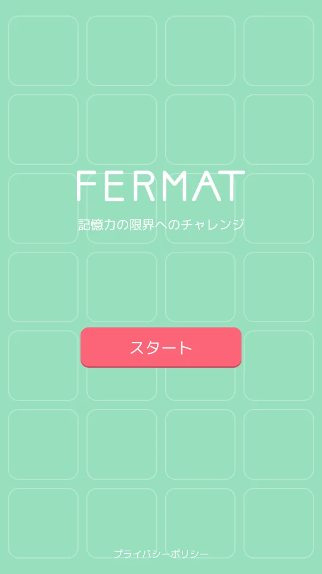
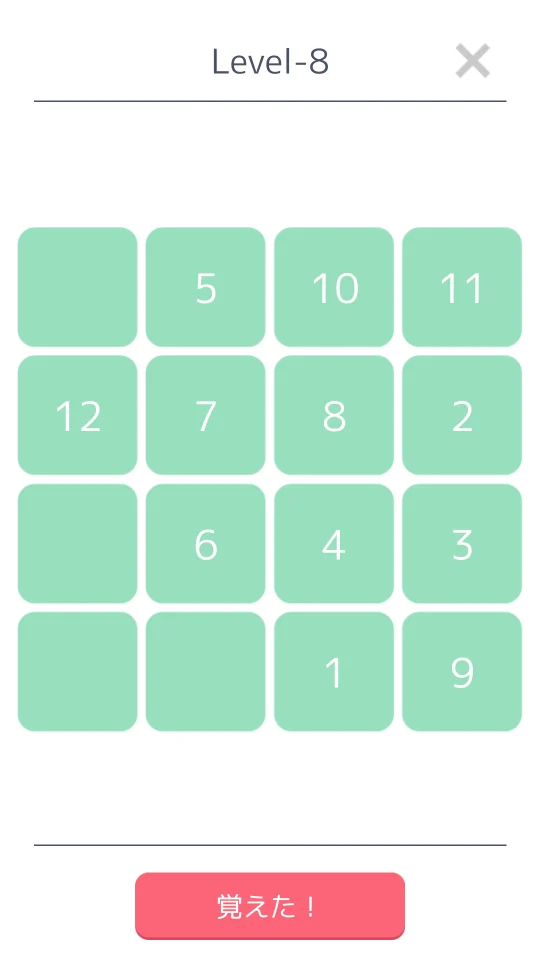
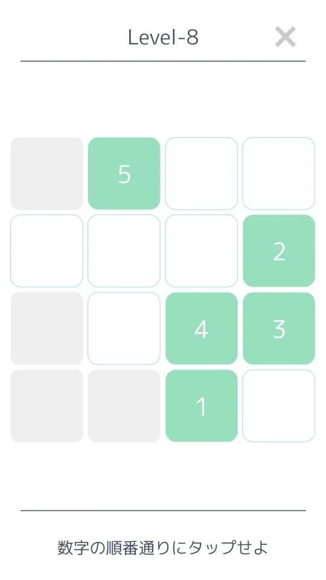
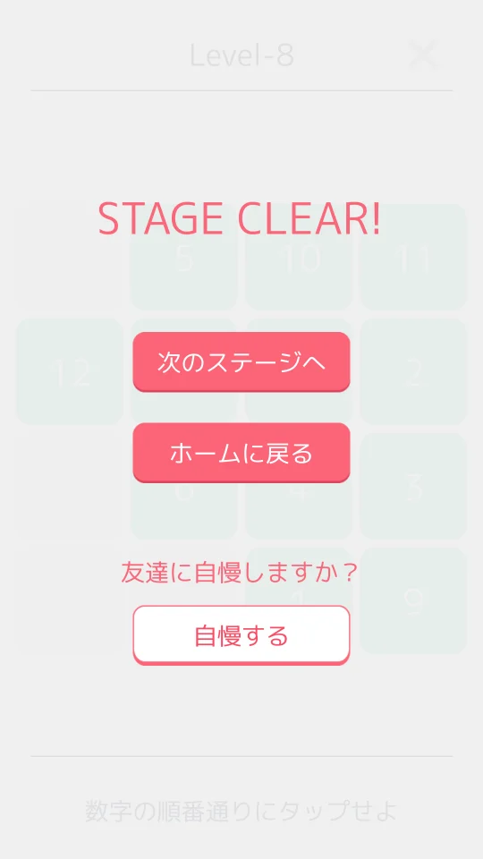
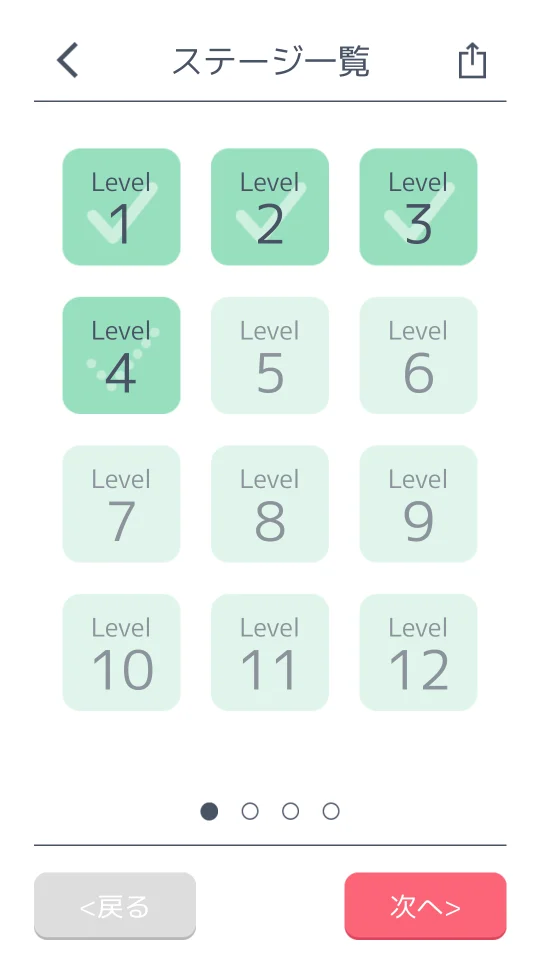
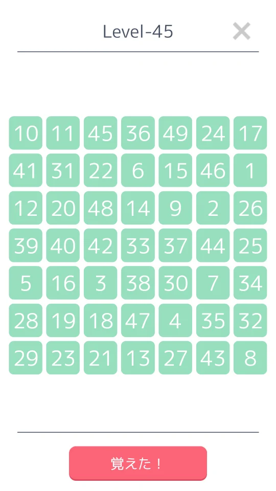

数字の位置を覚える
盤面に並んだカードの位置を覚えます。時間制限はないので、納得するまでじっくり眺めて大丈夫です。
全45ステージ · 5枚〜49枚 · 無料
FERMAT（フェルマー）は、並んだ数字の位置を覚えて 1 から順番にタップしていくシンプルな記憶力ゲームです。 すきま時間の脳トレにも、家族や友達との記録比べにも。
この場で体験できます — 数字を覚えたら「覚えた！」をタップ
複雑な操作も制限時間もありません。純粋に「どこにどの数字があったか」だけを覚えるシンプルな脳トレゲームです。
盤面に並んだカードの位置を覚えます。時間制限はないので、納得するまでじっくり眺めて大丈夫です。
「覚えた！」を押すとカードが裏返ります。1、2、3… と順番にタップ。1 度でも間違えたらそこで終了です。
最後のカードまでめくれたらステージクリア。クリアした盤面の画像を付けて、そのまま友達にシェアできます。
ステージが進むたびにカードが 1 枚ずつ増え、盤面も徐々に広がっていきます。あなたの記憶力はレベルいくつまで通用しますか？
Android・iPhone・iPad それぞれの画面に合わせてネイティブ実装。軽快に気持ちよく遊べます。

起動してすぐスタート。面倒なチュートリアルや登録画面はありません。

並んだ数字をしっかり暗記。準備ができたら「覚えた！」をタップ。

1 から順番にめくっていきます。正しいマスをめくるたび気持ちよく開きます。

クリアした盤面の画像を付けて、SNS や家族・友達に記録を自慢できます。

クリア状況がひと目で分かり、過去のステージにもいつでも再挑戦できます。

7×7 のマスがすべて数字で埋まるレベル 45。記憶力の限界に挑戦。
毎日の頭の体操にも、ちょっとした空き時間のリフレッシュにも。
焦らず自分のペースで覚えられます。「覚えた！」を押すまでずっと確認可能。
実際にクリアした盤面の画像を添付して、何枚まで覚えられたか自慢できます。
初回は 4 枚の練習ステージから始まるので、説明を読まなくてもすぐ分かります。
ログイン不要。進み具合は端末の中にだけ保存され、すぐ遊び始められます。
機内モードや地下鉄など、電波のない場所でも快適にプレイできます。
iPhone・iPad・Android スマートフォンに対応。すべてのステージを無料で遊べます。
カードに書かれた数字の位置を覚えて「覚えた！」を押すと、すべてのカードが裏返ります。1 から順番にカードをタップし、最後までめくれたらステージクリアです。順番を間違えるとそこで終了になります。
最初の 4 枚の練習ステージに加えて、本編は全 45 ステージあります。レベル 1 は 3×3 盤面の 5 枚から始まり、ステージが進むたびに 1 枚ずつ増えて、最終レベル 45 では 7×7 のマスがすべて埋まる 49 枚になります。
時間制限はありません。「覚えた！」を押すまでじっくり盤面を眺めることができるので、自分のペースで記憶力に挑戦できます。
不要です。アカウント登録やログインなしでそのまま遊べ、オフライン環境でも動作します。進み具合は端末の中にだけ保存されます。
完全無料で遊べます（アプリ内課金はありません）。Android（Google Play）および iOS（App Store、iPhone・iPad 対応）で配信しています。やり直しのときに広告が表示されることがあります。
はい。ステージクリア画面の「自慢する」ボタンから、クリアした盤面の画像を付けて結果をシェアできます。
iPhone・iPad・Android で無料配信中。5 枚から始めて、7×7 の 49 枚へ。